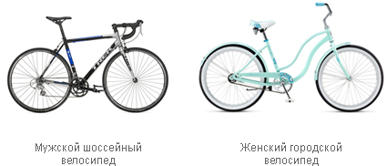

Типы дорожного велосипеда
Городской – оптимальный вариант для поездок по делам и прогулок на небольшие расстояния. Широкое мягкое седло обеспечивает комфортную езду.
Встречаются складные модели, что особенно удобно в городских условиях. В них часто отсутствует амортизационная вилка, а сам велик легко складывается. Его можно перевозить в багажнике любого авто, в электричке или трамвае. Удобный вариант, но чаще всего стоит дороже обычной модели.
Шоссейный – предназначен только для езды по идеально гладкой дороге (например, трековые гонки). Самый скоростной велосипед (18-30 передач). Особенности: легкий вес, узкие шины, седло, обеспечивающее лежачую посадку. Цена на любительские модели заметно выше, чем на другие типы велосипедов. Профессиональные спортивные модели имеют очень высокую стоимость.
Туринг (туристический) – напоминает шоссейный, но более практичен. Подойдет для длительной езды практически по всем дорогам умеренной сложности. Особенности: мощные колеса, усиленная рама. Число скоростей – 24 и более.
Круизер – хороший вариант для прогулок. Отличается эксклюзивным дизайном (гладкие линии изгибов рамы, необычные цвета и орнаменты), удобным сиденьем и широким рулем, обеспечивающим комфортное катание. Такие велосипеды имеют небольшое число скоростей (1-8) или вообще не имеют переключателей скоростей, стоят дорого. Диаметр колес – 24 или 26 дюймов.
Типы горного велосипеда
Даунхилл – применяется для скоростного спуска с холмов и гор по подготовленным трассам. Особенности: очень прочная рама, наличие передних и задних амортизаторов, небольшое число передач (не более 8-9), значительный вес (20 кг и больше).
Фрирайд – предназначен для скоростного спуска по бездорожью. Особенности: прочная рама, наличие передней и задней подвесок большого хода и мощных дисковых гидравлических тормозов.
Кросс-кантри – используется для скоростной езды по пересеченной местности. Особенности: небольшой вес, прочная рама (из алюминия, карбона или титановых сплавов), наличие одной или двух подвесок с контактными педалями, фиксирующими ногу велосипедиста.
All mountain («легкий фрирайд») – компромиссный вариант между фрирайдом и кросс-кантри для езды по не сложной горной местности. Вес такого велосипеда составляет около 13-17 кг.
Гибрид – сочетает качества MTB и туринга. Отличается высокой проходимостью и маневренностью. Число передач – 24-27. Диаметр колес – 28 дюймов.